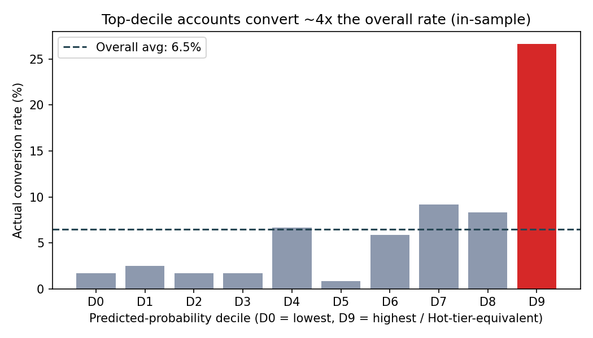
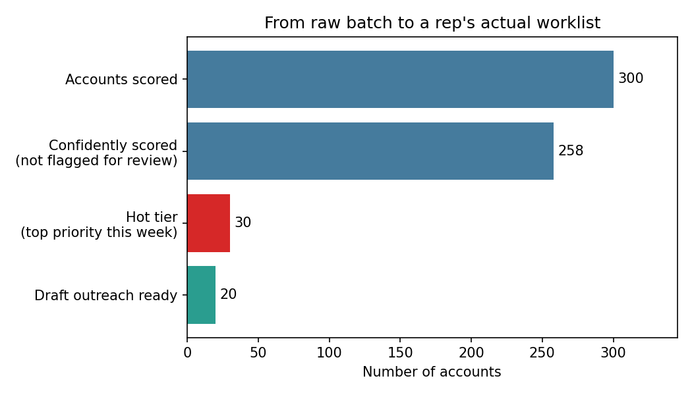
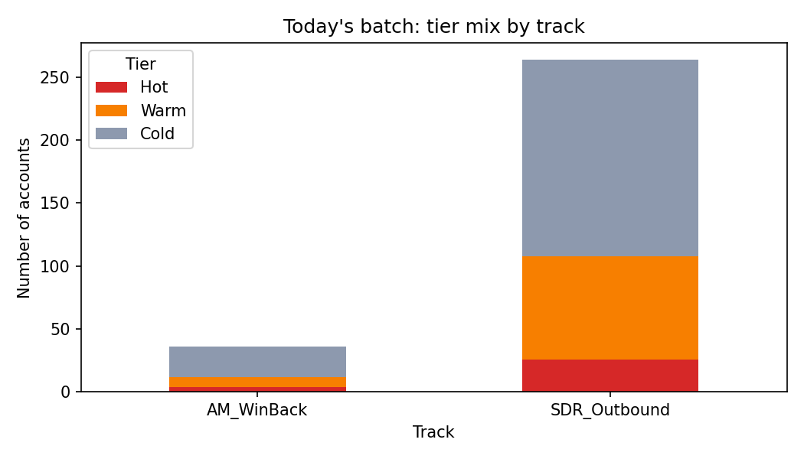

A business-focused walkthrough of the approach, the numbers, and what to watch — full
technical detail lives in PROPOSAL.md.
Cordilla has a working prediction model sitting unused, and thousands of accounts nobody is calling in any particular order. This agent turns "there's a model" into a short, ranked, reasoned list an SDR or Account Manager can act on today.
I scored the 1,200 historical accounts with the model and checked what actually happened for accounts the model rated highest vs. everyone else:

Accounts in the top 10% by predicted score converted at 26.7%, against a 6.5% average — a real, computed ~4.1x lift, not an assumed number. The honest caveats: this is measured on the same historical data the model was trained on (not a fresh held-out test), and that 6.5% baseline is itself higher than what the brief describes as real-world cold-outreach rates — so treat the relative lift as the defensible claim, not the exact 26.7% figure in production.

Every account gets scored and shown — nothing is hidden. 42 accounts (14%) have snapshot data over a year old, so the agent holds those back from automatic action (a person should double-check before calling) rather than confidently acting on stale information.

Accounts split into two tracks based on relationship: SDR_Outbound (Prospects/Suspects — cold outreach) and AM_WinBack (Former Customers). Each track gets its own tone of outreach even at the same score.
*Only for Hot-tier accounts that are not flagged for review — see the example below.
Built as a LangGraph pipeline rather than a multi-agent framework like CrewAI — this is fundamentally one pipeline with a couple of real decision points, not a negotiation between autonomous agents. The two red boxes above are genuine branch points: the quality gate can halt the whole run if input data has collapsed, and the draft step is skipped entirely for accounts the agent doesn't trust yet.
This is the clearest illustration of what the agent adds beyond the raw model number.
ACC-00205 scores high enough to rank in the top 10% (Hot tier) — but its data is
419 days old.
ACC-00205
Predicted probability: 12.9%
Ranks in the top 10% of this batch.
That's it — no context on why, no flag that the underlying data predates most of the last year, and (if a naive pipeline auto-drafted off every top-ranked account) a confident-sounding outreach message built on stale facts.
ACC-00205 Hot Needs review
Why: larger company by headcount (243 vs. typical 61), strong buying intent (63 vs. typical 29), above-average recent web activity.
Flag: stale snapshot (419 days old) — the agent does not auto-generate outreach for this account until someone confirms the data still holds.
Same model, same number. The difference is entirely what the agent adds on top: an explanation a rep can use, and a safety check that stops a stale record from turning into a confident-looking (and possibly wrong) message.
The brief's own cautionary tale — a model that looked fine and quietly drifted for two quarters before anyone noticed — is the design target here. Five checks run on every batch:
| Check | What it catches | Latest run |
|---|---|---|
| Input quality | Missing/stale/out-of-range data before it reaches the model | Pass |
| Score drift (PSI) | The model's output distribution silently shifting | Pass (PSI ≈ 0.006) |
| Tier sanity | Threshold or feature-pipeline breakage even if PSI looks fine | Pass |
| LLM output groundedness (Inspect AI) | The drafting step inventing facts not in the account's real data | Pass |
| Business-outcome proxy | Predicted vs. actual conversion, by decile | Not runnable yet (no 90-day outcomes exist for this batch) |
Two structural gaps limit what's possible with just these two CSVs, both worth naming directly rather than working around quietly:
These CSVs describe accounts, not people — no name, email, or phone. An agent can rank a company all day, but a rep still can't act without a contact. Any real deployment needs this joined in from Salesforce contacts/leads before "call this account" becomes literally actionable.
With a real name and company, an LLM-with-tools step could pull recent news, funding, leadership changes, or LinkedIn activity before a call — turning "high intent score" into an actual conversation hook. This is exactly the kind of LLM tool-use step this agent's architecture already isolates safely (see the mock/Groq drafter design).
Real RFM (Recency, Frequency, Monetary value) segmentation — especially valuable for
Former Customer win-back — needs purchase dates and amounts. Nothing here supports it; see
DOMAIN-DICTIONARY.md section 5 for exactly what's missing and why the current
columns can't substitute for it.
Right now every Hot account is treated as equally valuable. With line-item/ACV data, tiering could weight by expected deal size, not just conversion probability — a account with 15% conversion odds and a $50k ACV may outrank one with 20% odds and a $5k ACV.